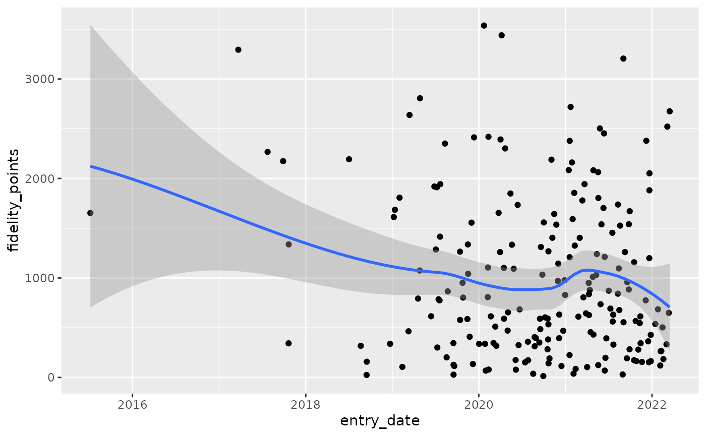
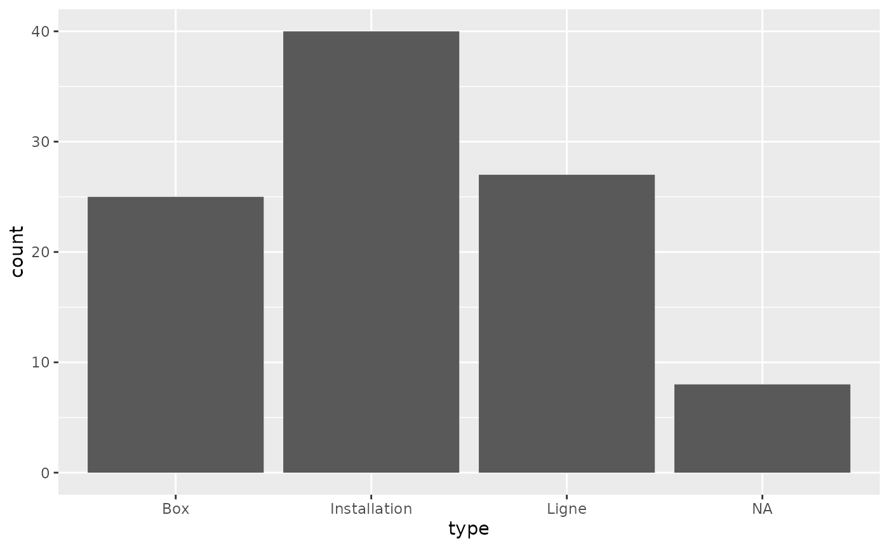
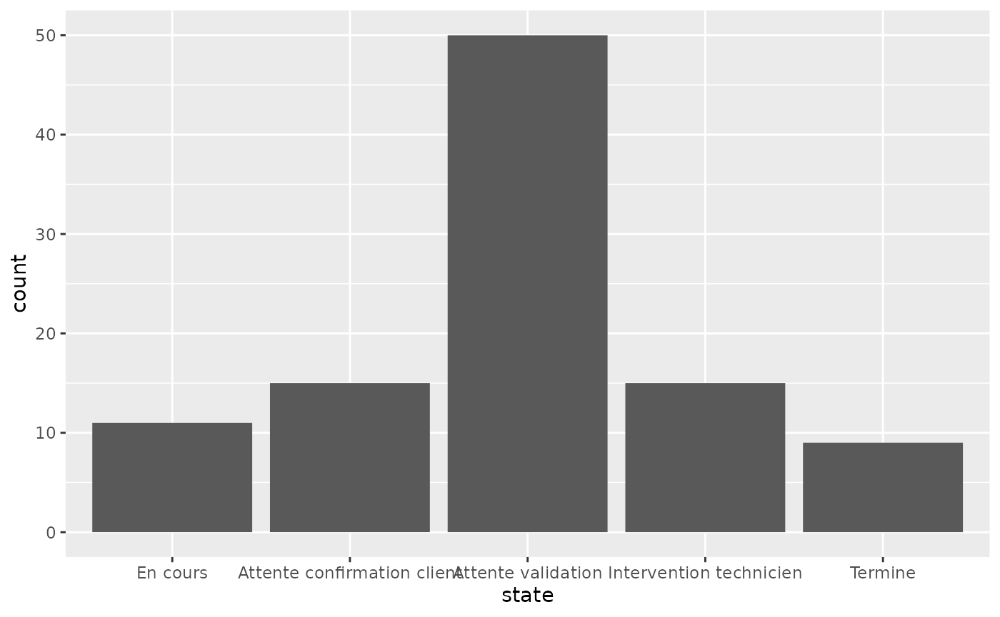
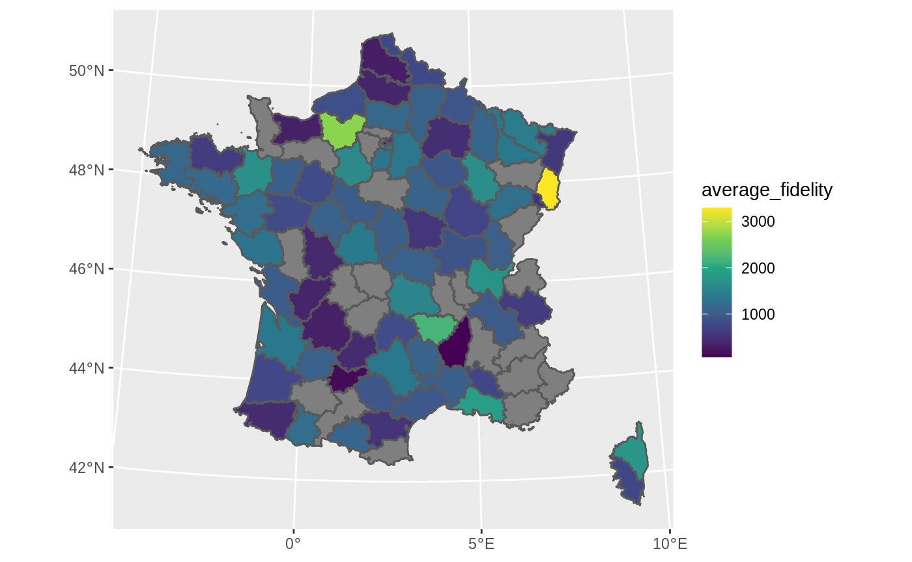

The database fakes an after-sale client database for a Phone company. There is:
a ticket database which contains all calls to the after-sale service of some clients having problems
Ticket centered dataset with already joined client characteristics
fake_ticket_client(vol = 10) #> # A tibble: 10 x 25 #> ref num_client first last job age region id_dpt departement #> <chr> <chr> <chr> <chr> <chr> <dbl> <chr> <chr> <chr> #> 1 DOSS… 79 Jovan O'Ke… Gene… 22 Langu… 66 Pyrénées-O… #> 2 DOSS… 69 Miss Lean… Emer… 68 Champ… 51 <NA> #> 3 DOSS… 120 Odell Stok… Engi… 24 <NA> 37 Indre-et-L… #> 4 DOSS… 31 Loren Lars… <NA> NA Pays … 85 Vendée #> 5 DOSS… 59 Mayb… Maye… Furt… 18 Auver… 43 Haute-Loire #> 6 DOSS… 118 Jama… Ober… Engi… 18 Poito… 16 Charente #> 7 DOSS… 77 Lee Scha… Admi… NA Lorra… 57 Moselle #> 8 DOSS… 65 Deme… Auer Cont… 21 Langu… 48 Lozère #> 9 DOSS… 141 Wilf… Harv… Educ… 53 Poito… 86 Vienne #> 10 DOSS… 182 Addy… Nien… Earl… 65 Breta… 29 Finistère #> # … with 16 more variables: cb_provider <chr>, name <chr>, entry_date <dttm>, #> # fidelity_points <dbl>, priority_encoded <dbl>, priority <fct>, #> # timestamp <date>, year <dbl>, month <dbl>, day <int>, supported <chr>, #> # supported_encoded <int>, type <chr>, type_encoded <int>, state <fct>, #> # source_call <fct>
tickets_db <- fake_ticket_client(vol = 100, split = TRUE) tickets_db #> $clients #> # A tibble: 200 x 14 #> num_client first last job age region id_dpt departement cb_provider #> * <chr> <chr> <chr> <chr> <dbl> <chr> <chr> <chr> <chr> #> 1 1 Solo… Hean… Civi… 53 <NA> 52 <NA> Diners Clu… #> 2 2 Karma Will… Scie… 81 <NA> 68 Haut-Rhin VISA 13 di… #> 3 3 Press Kulas Anim… NA <NA> 29 Finistère <NA> #> 4 4 Laken McDe… <NA> NA Picar… 60 Oise <NA> #> 5 5 Sydn… Jask… Hort… 30 Pays … 72 Sarthe <NA> #> 6 6 Clay… Runo… Comm… NA Île-d… 77 Seine-et-M… Diners Clu… #> 7 7 Robe… Purd… Fina… 60 Auver… 43 Haute-Loire <NA> #> 8 8 Dr. Rona… Astr… 30 Picar… 60 Oise <NA> #> 9 9 Miss Alon… Occu… 18 Picar… 60 Oise Diners Clu… #> 10 10 Vern… Ondr… Clin… 19 Corse 2A Corse-du-S… <NA> #> # … with 190 more rows, and 5 more variables: name <chr>, entry_date <dttm>, #> # fidelity_points <dbl>, priority_encoded <dbl>, priority <fct> #> #> $tickets #> # A tibble: 100 x 10 #> ref num_client year month day timestamp supported type state #> <chr> <chr> <dbl> <dbl> <int> <date> <chr> <chr> <fct> #> 1 DOSS… 1 2014 2 15 2014-02-15 Non Inst… Term… #> 2 DOSS… 22 2017 12 7 2017-12-07 Non Inst… Atte… #> 3 DOSS… 9 2018 1 11 2018-01-11 Non Inst… Term… #> 4 DOSS… 8 2018 1 26 2018-01-26 Non Box Atte… #> 5 DOSS… 30 2018 2 12 2018-02-12 Oui Inst… Inte… #> 6 DOSS… 10 2018 2 24 2018-02-24 Oui Inst… Atte… #> 7 DOSS… 37 2018 3 24 2018-03-24 Non Ligne Atte… #> 8 DOSS… 37 2018 5 14 2018-05-14 Non Box Atte… #> 9 DOSS… 24 2018 5 21 2018-05-21 Non <NA> En c… #> 10 DOSS… 12 2018 6 7 2018-06-07 Non Inst… Atte… #> # … with 90 more rows, and 1 more variable: source_call <fct>
ggplot(tickets_db$clients) + aes(x = entry_date, y = fidelity_points) + geom_point() + geom_smooth() #> `geom_smooth()` using method = 'loess' and formula 'y ~ x'



fra_sf. {sf} package must be loaded.
clients_map <- tickets_db$clients %>% group_by(id_dpt) %>% summarise( number_of_clients = n(), average_fidelity = mean(fidelity_points, na.rm = TRUE) ) %>% full_join(fra_sf, by = "id_dpt") %>% st_sf() #> `summarise()` ungrouping output (override with `.groups` argument) ggplot(clients_map) + geom_sf(aes(fill = average_fidelity)) + scale_fill_viridis_c() + coord_sf( crs = 2154, datum = 4326 )
